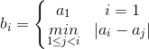

问题描述
已知某数列前两项为2和3，其后继项根据前面最后两项的乘积，按下列规则生成：
① 若乘积为一位数，则该乘积即为数列的后继项；
② 若乘积为二位数，则该乘积的十位上的数字和个位上的数字依次作为数列的两个后继项。
输出该数列的前Ｎ项及它们的和。
输入格式
一个整数N（2≤N≤1000）。
输出格式
第1行输出该数列的前Ｎ项的和。
第2行输出该数列的前N项。
输入样例
10
输出样例
sum(10)=44
2 3 6 1 8 8 6 4 2 4
编写函数int sum(int *pa, int n)按数列的生成方法生成数列的前n项并保存在数组pa中，同时将前n项的和作为函数值返回。
#include <stdio.h>
#define MAXNUM 1001
int sum(int *pa, int n);
int main()
{
int n,num[MAXNUM];
scanf("%d",&n);
printf("sum(%d)=%d\n",n,sum(num,n));
for (int i=0;i<n;i++)
{
printf("%d ",num[i]);
}
printf("\n");
return 0;
}
int sum(int *pa, int n)
{
int count, total, temp;
*pa = 2;
*(++pa)=3;
total=5;
count=2;
while (count++<n)
{
temp = *(pa-1) * (*pa);
if (temp<10)
{
total+=temp;
*(++pa) = temp;
}
else
{
*(++pa)= temp/10;
total += *pa;
if (count++<n)
{
*(++pa) = temp%10;
total += *pa;
}
}
}
return total;
}
问题描述
有一个序列，初始时只有两个数x和y，之后每次操作时，在原序列的任意两个相邻数之间插入这两个数的和，得到新序列。举例说明：
初始：1 2
操作1次：1 3 2
操作2次：1 4 3 5 2
……
问操作n次之后，得到的序列的所有数之和是多少？
输入格式
三个整数x，y，n，相邻两个数之间用单个空格隔开。0 <= x <= 5，0 <= y <= 5，1 < n <= 10。
输出格式
一个整数，即最终序列中所有数之和。
样例输入
1 2 2
样例输出
15
（1）编程思路1。
像例23一样将操作n次之后的序列生成出来再求和。要生成操作n次之后的序列需要进行二重循环，外循环控制操作次数，内循环通过在前一序列相邻两数间插入和的方式生成新序列。这个序列是不断增长的，第1次操作后有3个数，第2次操作后有5个数，…，第10次操作后有288个数。
由于题目求最终序列中所有数之和，因此无需保留中间序列的情况，只需保留最终序列的结果。因此为了方便操作，定义一个二维数组a[2][300]，用滚动数组的方式进行操作。即初始时，a[0][0]=x，a[0][1]=y。然后进行
第1次操作，由a[0][0]~a[0][1]得到a[1][0]~a[1][2]；
第2次操作，由a[1][0]~a[1][2]得到a[0][0]~a[0][4]；
第3次操作，由a[0][0]~a[0][2]得到a[1][0]~a[1][8]；
……
第n次操作，由a[(n-1)%2][0]~a[(n-1)%2][ k-1 ]得到 a[n%2][0]~a[n%2][ k-1+(n-1)*(n-1)]。（k表示上一次操作结束后的元素个数）
（2）源程序1。
#include <stdio.h>
int main()
{
int a[2][300];
int x,y,n;
scanf("%d%d%d",&x,&y,&n);
int i,j,k;
a[0][0]=x;
a[0][1]=y;
k=2;
for(i=1;i<=n;i++)
{
int cnt=0;
for (j=0;j<k-1;j++)
{
a[i%2][cnt++]=a[(i-1)%2][j];
a[i%2][cnt++]=a[(i-1)%2][j]+a[(i-1)%2][j+1];
}
a[i%2][cnt++]=a[(i-1)%2][j];
k=cnt;
}
int s=0;
for (i=0;i<k;i++)
s+=a[n%2][i];
printf("%d\n",s);
return 0;
}
（3）编程思路2。
由于题目求最终序列中所有数之和，因此我们可以通过找到各次操作后和之间的规律得到结果，而无需生成整个最终序列。
初始序列为 ： x y 和S[0]为 x+y
第1次操作后 ：x， x+y， y 和s[1]为2x+2y
第2次操作后 ：x， 2x+y，x+y，x+2y，y 和s[2]为5x+5y
第3次操作后 ：x，3x+y，2x+y，3x+2y，x+y，2x+3y，x+2y，x+3y，y，和s[3]为14x+14y
……
由上面可以推出，若第n次操作后序列和为S[n]，则第n+1次操作后的和S[n+1]一定为3*S[n]-(x+y)。因为在由第n次操作后序列生成第n+1次操作序列时，除首尾两个元素x和y外，中间每个元素会在新序列中产生3次作用（与前一个元素的和，自身，与后一个元素的和），而首尾两个元素x和y只作用两次，x没有前一个元素，y没有后一个元素。
（4）源程序2。
#include <stdio.h>
int main()
{
int x,y,n,s,i;
scanf("%d%d%d",&x,&y,&n);
s=x+y;
for (i=1;i<=n;i++)
{
s=3*s-(x+y);
}
printf("%d\n",s);
return 0;
}
本题选自洛谷题库 （https://www.luogu.org/problem/P1732）
题目描述
设有数列A={a1, a2, …, an}，根据数列A计算数列B={b1, b2, …, bn}，其中：

求数列B的前n项之和。
输入格式
第一行是一个正整数t（0<t<=10），表示测试数据的组数。接下来有t行，每行表示一组测试数据。每行以一个正整数n（0<n<=100 000）开始，表示数列A中元素的个数；然后是n个非负整数，依次表示a1, a2, …, an的值（0<= ai<=65 536）。
输出格式
对于每组测试数据，输出数列B的所有的元素之和。
输入样例
2
5 1 2 3 4 5
7 2 9 7 4 6 2 6
输出样例
5
14
（1）编程思路1。
对每一个ai直接根据规则求bi。具体说就是用循环求每一个ai 与它前面各个数的差的最小绝对值。
（2）源程序1。
#include <stdio.h>
#include <math.h>
int main()
{
int t;
scanf("%d",&t);
int a[100001];
while(t--)
{
int n;
scanf("%d",&n);
for (int i=0;i<n;i++)
scanf("%d",&a[i]);
int sum=a[0];
for (int i=1;i<n;i++)
{
int min=abs(a[i]-a[0]);
for (int j=1;j<=i-1;j++)
if (abs(a[i]-a[j])<min)
min=abs(a[i]-a[j]);
sum+=min;
}
printf("%d\n",sum);
}
return 0;
}
（3）编程思路2。
按思路1编写程序后，提交给洛谷OJ，只能得30分。10组测试数据中有7组数据显示“TLE”超时。因此需要想另外的办法。
题目中给定0≤ai≤65536，这意味着可以定义一个hash数组存储对应数字是否已经出现过，hash[i]=0，表示数i在序列中没出现，hash[i]=1表示数i在序列中出现过。这样，每1个a[i]转化成b[i]时，都在hash表中寻找距离它最近的、已经出现过的数。
即从当前数字x（表示ai）开始向前（x-i）或向后（x+i）遍历，找到对应hash[x-i]或hash[x+i]为1的值，也就是找到了最近已经出现过的的数字aj。
（4）源程序2。
#include <stdio.h>
#include <string.h>
int main()
{
int t;
scanf("%d",&t);
int hash[65537];
while(t--)
{
memset(hash,0,sizeof(hash));
int n,x;
scanf("%d%d",&n,&x);
hash[x]=1;
int sum=x;
for (int k=2;k<=n;k++)
{
scanf("%d",&x);
for(int i=0;;i++)
{
if (x-i>=0)
if (hash[x-i])
{
sum+=i;
break;
}
if (x+i<=65536)
if (hash[x+i])
{
sum+=i;
break;
}
}
hash[x]=1;
}
printf("%d\n",sum);
}
return 0;
}
问题描述
给定一个正整数数列，求该数列中所有连续子序列和的和。例如，给定数列1,2,3，该数列中连续子序列有：[1], [2], [3], [1, 2], [2, 3]和[1, 2, 3]，这些连续子序列和的和为：1 + 2 + 3 + 3 + 5 + 6 = 20。
输入格式
第1行是一个正整数T，代表测试数据的组数。
每组测试数据包括两行，首行为一个正整数N，表示序列中元素的个数，接着一行给出序列的N个元素。
输出格式
对每组测试用例，输出序列的和模1 000 000 007后的结果。
输入样例
2
1
2
3
1 2 3
输出样例
2
20
（1）编程思路。
同样找规律，规律很明显，数列中每个数ai都被加了i*(N+1-i)次。
以数列1,2,3为例，第1个数1被加了1*（3+1-1）=3次，第2个数2被加了2*（3+1-2）=4次，第3个数3被加了3*（3+1-3）=3次。所以和=1*3+2*4+3*3=20。
（2）源程序。
#include <stdio.h>
#define MOD 1000000007
int main()
{
int t,n;
scanf("%d",&t);
while (t--)
{
scanf("%d",&n);
long long sum=0,x,ai;
for (int i=1;i<=n;i++)
{
scanf("%lld",&ai);
x=(i*ai)% MOD;
x=(x*(n+1-i)) % MOD;
sum=(sum+x) % MOD;
}
printf("%lld\n",sum);
}
return 0;
}